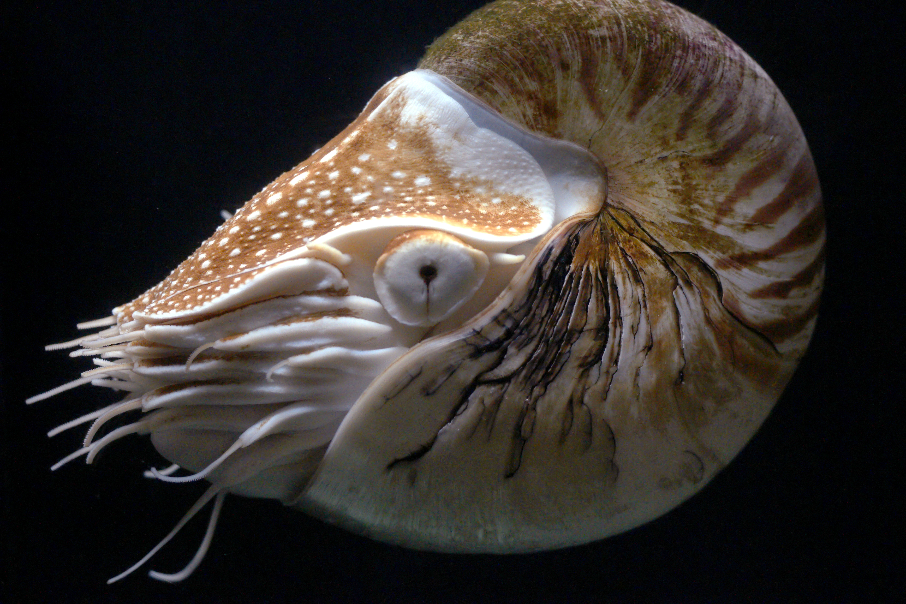

This page gives you some information about the Nautiluses
The sea animal im writting about is a Nautiluses one of the oldest sea animal
This animal is known for its creepy and big body.

This is a dinosaur because its was living all the wayyyyyy back then.
I like this sea animal because it looks scary but cool and is from minecraft mainly the minecraft part.